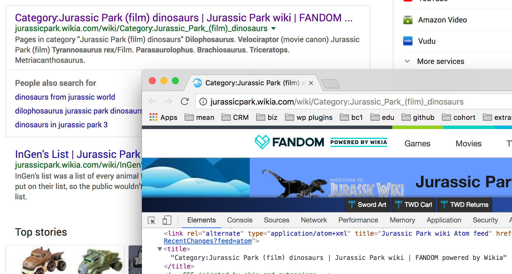

TLDR:
<!DOCTYPE><html><head><title><body>
<!DOCTYPE>Defines the type of the document to be rendered by the browser and is required on every HTML page.
Note: The
<!DOCTYPE>is not a tag. It is a declaration providing information to the browser.
In the past (think early Internet Explorer & Netscape), a document needed to be very specificly declared depending on what types of elements and stylistic tags were needed to render the page.
<!DOCTYPE HTML PUBLIC "-//W3C//DTD HTML 4.01 Transitional//EN" "http://www.w3.org/TR/html4/transitional.dtd">
However, as web standards have been agreed upon and best practices have pulled web styling out of the markup deprecating old technologies
However, as web standards and best practices have been agreed upon, a simpler future proof declaration was created:
<!DOCTYPE html>
Quite a bit easier to remember, right?
<!DOCTYPE html>
<html>The outermost root element of your page.
This tag is like your skin. It holds everything together and keeps you from making a huge mess. Every page will have begin with an open <html> tag right after the <!DOCTYPE>. The very last element will always be the closing </html> tag.
<html> tag.</html> tag.<!DOCTYPE html><html></html>
<head>The element that contains all meta information about the document.
Just like you, your also have a head. A website does also. And just like your head, the website has thoughts. These thoughts (or meta info) is stuff a website needs that (mostly) the user doesn't need to see.
<html> tags, create an open and closing <head> tag.<!DOCTYPE html><html><head></head></html>
Note: Please notice the indention of the
<head>open and closing tag. Whenever an element is nested inside another, you indent it. Make it a habit.
Inside of the <head> tag, you'll declare character sets, viewport settings, page titles, and link up to external stylesheets.
For now, you only need to worry about one tag: The title tag.
<title>This tag is required in every HTML page and it defines the title of the document.
What you write between the open and closing tag show up in the tab of the browser window and is super important for SEO ranking.

<head> tags, create an open and closing <title> tag. Between those tags, write a relavent project title.<!DOCTYPE html><html><head><title>Websites for Beginners</title></head></html>
<body>The element that contains all meta information about the document.
Just like you have a head, you also have a body. Well, so does a website. And just like your body, this is where all the guts of your website will go.
That's pretty much all there is to this tag. If you want the user to see something, make sure it's inside this element.
</head> tag, create an open <body> tag.</body> tag.<!DOCTYPE html><html><head><title>Websites for Beginners</title></head><body></body></html>
That's it.
Let's build a website.